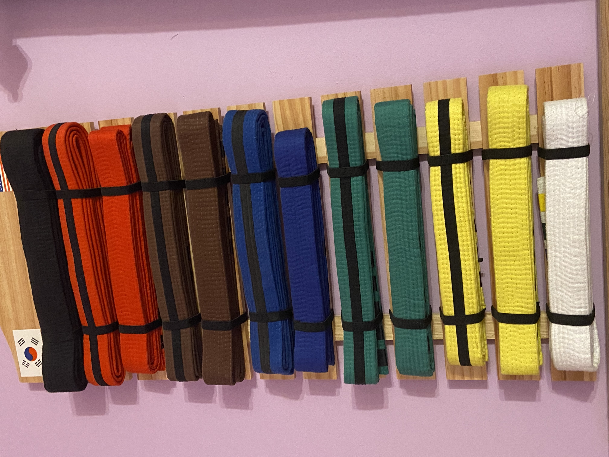
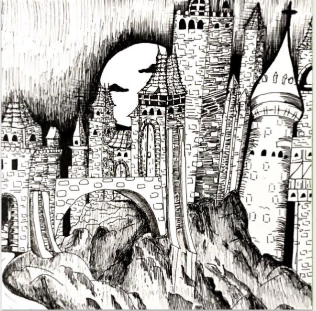
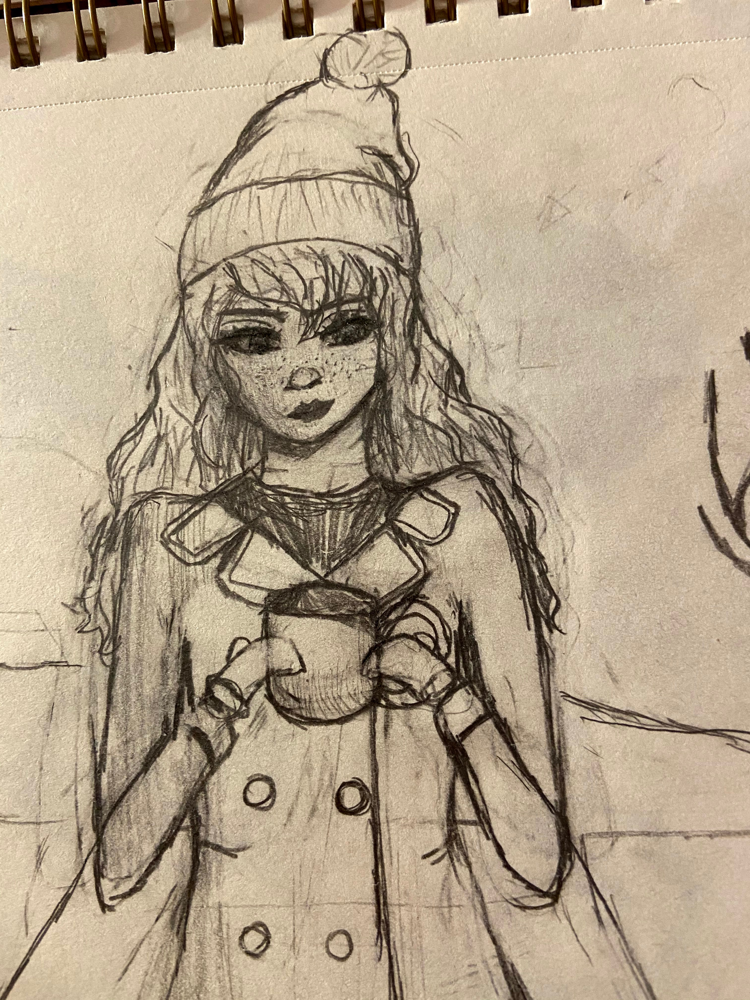
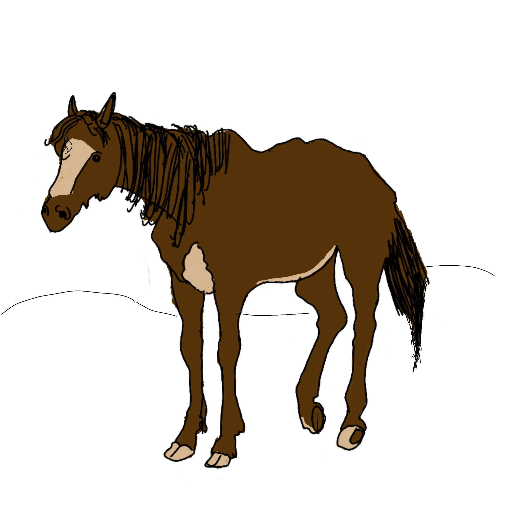
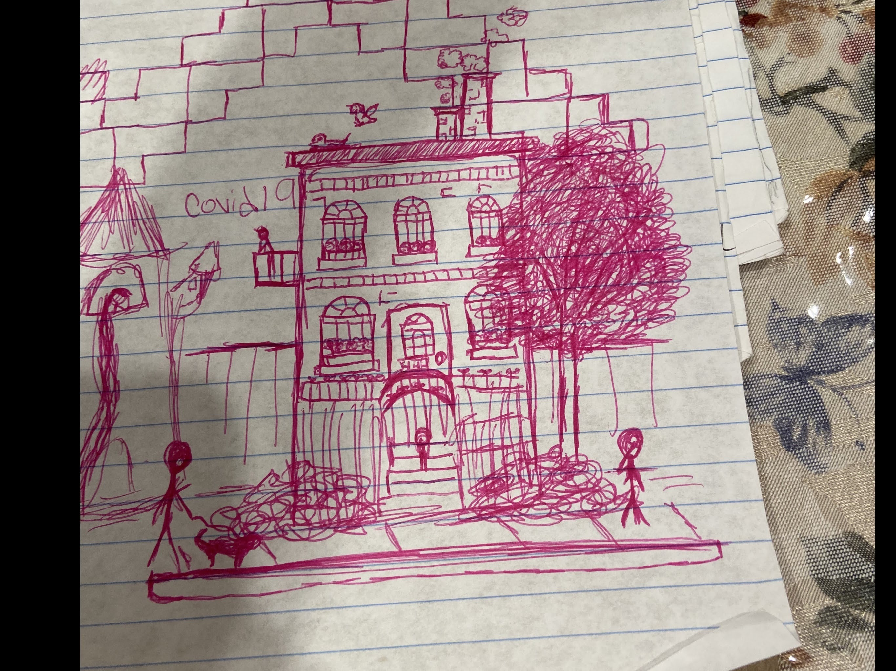
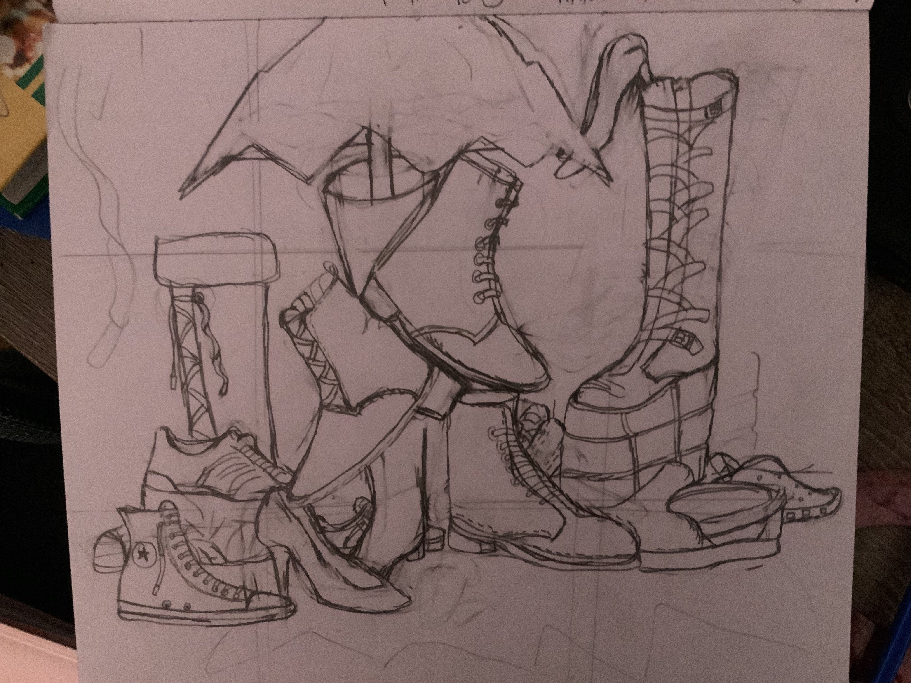
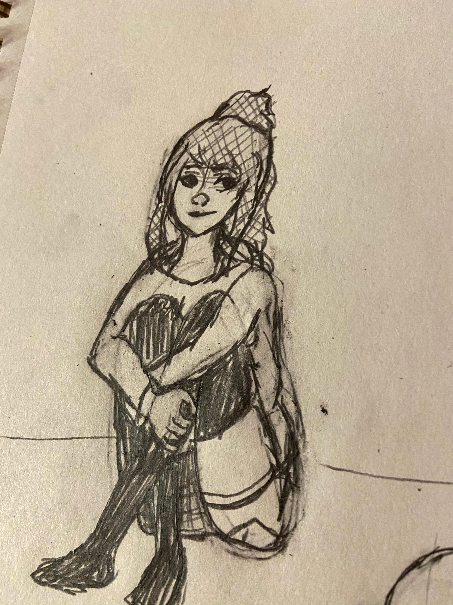

Riya Ramakrishnan
All About Me!
Hi! My name is Riya Ramakrishnan I'm a rising Junior at MTHS. My favorite color is pink and my favorite shows are Kill la Kill and Criminal Minds.
I am a first degree black belt in Taekwondo, I've been dancing since I was 5 and I am in a lot of clubs at school including Math Honor Society and Art Honor Society. I am also on my school's Academic Decathalon team and have competed in many competitions.
Taekwondo
I started Taekwondo when I was in 5th grade at East Coast Martial Arts Institute. As a white belt it was very hard for me to keep up with most of the exercises and the kicks we did. As I grew however, I started to love Taekwondo and went to each class ready to improve. I perservered and now I have the pleasure to say that I earned my black belt. :)
Art Honor Society
I started my art journey when i was in middle school, when I started I wasn't very good, but even though I wasn't good at it I still drew anyways. Overtime I became even more interested in art and met likeminded people who also had the same passion. They helped me improve my skills and after a while I started to become very good at drawing. I joined Art Honor Society to keep up with my passion and to continue to improve my skills.
     
I was awarded this certificate for my acheivements in art class.
You can visit this website to learn more about the Art Honor Society!